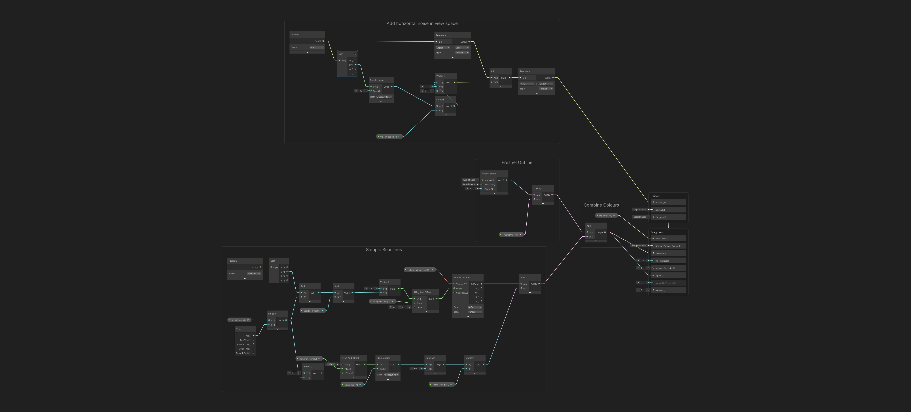

Engine : Unity
Tools : Unity
Hologram is surface material shader with moving lines and has a glitch effect.
Material

Shader Graph

Script
using System.Collections;
using System.Collections.Generic;
using UnityEngine;
public class Glitch : MonoBehaviour
{
private Material material;
private void Awake()
{
material = GetComponent().material;
StartCoroutine(GlitchRoutine());
}
private IEnumerator GlitchRoutine()
{
while(true)
{
material.SetFloat("_GlitchStrength", 0.0f);
material.SetFloat("_ScanlineOffset", 0.0f);
yield return new WaitForSeconds(0.25f);
material.SetFloat("_GlitchStrength", 0.75f);
material.SetFloat("_ScanlineOffset", 0.5f);
yield return new WaitForSeconds(0.25f);
material.SetFloat("_GlitchStrength", 0.0f);
material.SetFloat("_ScanlineOffset", 0.0f);
yield return new WaitForSeconds(0.5f);
material.SetFloat("_GlitchStrength", 0.5f);
material.SetFloat("_ScanlineOffset", 0.5f);
yield return new WaitForSeconds(0.1f);
material.SetFloat("_GlitchStrength", 0.0f);
material.SetFloat("_ScanlineOffset", 0.0f);
yield return new WaitForSeconds(0.1f);
material.SetFloat("_GlitchStrength", 0.25f);
material.SetFloat("_ScanlineOffset", 0.5f);
yield return new WaitForSeconds(0.1f);
material.SetFloat("_GlitchStrength", 0.0f);
material.SetFloat("_ScanlineOffset", 0.0f);
yield return new WaitForSeconds(0.4f);
material.SetFloat("_GlitchStrength", 0.5f);
material.SetFloat("_ScanlineOffset", 0.5f);
yield return new WaitForSeconds(0.3f);
}
}
} Explanation
Fresnel lighting
Let’s kick things off with a visual trick that gives our object that glowing, sci-fi outline — Fresnel lighting.
Imagine you’re looking at a shiny bubble. When you look straight at the center, it seems dim, but the edges catch the light and glow. That’s Fresnel in action. It simulates how light behaves on surfaces when seen from different angles — and it’s especially powerful for creating holographic effects.
In technical terms, Fresnel lighting depends on the angle between your viewpoint and the surface of the object. The steeper the viewing angle (i.e., looking at the edge of a curved object), the stronger the effect. That’s why spheres and curved surfaces show this effect beautifully, while sharp-edged objects show less of it.
Let’s Build It in Shader Graph:
-
Create a Fresnel Node
- Unity has a ready-to-go Fresnel Effect node. Drop it in.
- Set the Power to something like 4 or 5. This controls how tight or spread-out the glow is — higher values make it thinner and more focused around the edges.
-
Make it Glow
- Create a Color property called FresnelColor, and set its mode to HDR (High Dynamic Range). This allows us to punch in bright, emissive colors that can glow more intensely than regular colors.
- Choose a bright color (e.g., white with intensity 2) to start with.
-
Combine the Effect
- Multiply the output of the Fresnel node by the FresnelColor. This gives us a colorized glow that gets brighter on the edges of the object.
-
Connect It
- Plug this combined result into both the Emission and Alpha slots of the PBR Master node.
- Set the Alpha Clip Threshold to 0 and change the Surface type to Transparent under the gear icon.
-
Add a Base Color
- To fill in the center of the object, add a MainColor property (also HDR), and connect it to the Albedo input. Make this one less intense than the FresnelColor, so the glow stands out.
Now if you apply this shader to a sphere, you’ll get a glowing ring effect around the edges — it already feels like a sci-fi hologram! This "edge glow" is a huge part of the illusion, and it's what makes the shader work especially well for rounded objects like characters, planets, or alien plants.
Scanline Lighting
So we’ve got our glowing edges with the Fresnel effect — now let’s breathe life into it with a moving scanline effect. Think of those retro sci-fi holograms where a horizontal light sweeps down the body — like a futuristic projector constantly refreshing the image.
Step-by-step Breakdown:
-
Bring in a Scanline Texture
- You’ll need a texture that has horizontal lines — alternating bright and dark, like stripes on a barcode.
- In the original project, there’s a file called HologramLines.png. If you're rolling your own, a simple black-and-white pattern with a touch of noise or variation works great for a less "perfect" and more realistic feel.
-
Set It Up in the Shader
- Add a new Texture2D property — name it something like ScanlineTexture.
- Use a Sample Texture 2D node to read from this texture.
-
Make It Flow Vertically
- We don’t want the texture to sit still — we want it to scroll down the object, aligned with the real-world "up and down" (Y-axis).
- To do that, grab a Position node and set it to World space.
- Then use a Split node to isolate the Y-axis component (this gives us how high each pixel is in world space).
-
Scroll Over Time
- Add a property called ScrollSpeed (Vector1), and multiply it with the Time node. This creates a timer for our scrolling animation.
- Add this result to the Y-value from the position node — this makes the texture appear to flow downward like a scanline sweeping through the object.
-
Create New UV Coordinates
- With the new Y-value (which now includes time), create a Vector2 node where:
- X = something like 0.5 (the texture is uniform left to right, so X doesn’t matter much)
- Y = your animated scroll position
- With the new Y-value (which now includes time), create a Vector2 node where:
-
Control Repetition with Tiling
- Add a HologramTiling property (Vector2). This decides how tightly packed the scanlines are.
- Use a Tiling And Offset node and plug in:
- Our animated UVs → UV input
- HologramTiling → Tiling input
-
Connect to Emission
- Feed the output UVs into your Sample Texture 2D node.
- Finally, combine the scanline texture and your existing fresnel glow using an Add node. This blends the moving scanlines on top of the fresnel effect.
- Plug this result into both the Emission and Alpha ports of the PBR Master node.
Once everything’s hooked up, your material will now feel alive — with glowing edges and animated scanlines sweeping through it. This adds that unmistakable sci-fi hologram vibe — a mix of digital pulse and futuristic shimmer.
The beauty of this setup is that it’s procedural — it works dynamically in world space, so multiple objects can share the same shader and still have a consistent, natural scanline effect moving across them.
Removing Shadows
By nature, holograms are light-based projections — not solid objects — so it’s weird when they receive shadows like regular physical materials. In Unity's Universal Render Pipeline (URP), though, stopping an object from receiving shadows isn’t as simple as ticking a checkbox.
In the old rendering system (Built-in Pipeline), there was a handy checkbox for “Receive Shadows” on materials. But URP? Not so generous. We have to do a little workaround using Shader Keywords and Debug Mode.
Here’s How to Turn Off Shadows on the Hologram Shader:
-
Add a Shader Keyword
- Inside the Shader Graph for your hologram, open the Blackboard (where your properties are listed).
- Click the plus (+) button.
- Choose Keyword → Boolean (it’s at the bottom of the list).
- Name it
_RECEIVE_SHADOWS_OFF— this name must be typed exactly like that. Capital letters, underscores, everything. This keyword is like a switch the URP shader system looks for. When it sees_RECEIVE_SHADOWS_OFF, it knows to stop rendering shadows on that material. - Leave the box ticked by default (this means “shadows are turned off”).
-
Use Debug Mode in Inspector
- To activate the keyword on actual materials, select the material(s) using your hologram shader.
- Click the three dots in the top-right of the Inspector panel, and switch to Debug Mode.
- Scroll down to a hidden section called Shader Keywords.
- Manually type in:
_RECEIVE_SHADOWS_OFF(again, must be exact). - Boom — shadows are gone! Your holograms now behave like light projections instead of physical objects.
- Once that’s done, you can return the Inspector back to Normal Mode.
Imperfections
Perfect holograms are boring. In sci-fi games and movies, holograms almost always flicker, ripple, or glitch a little. That distortion — like a fuzzy phone call — makes the effect feel alive and immersive.
To simulate that, we’ll add two layers of imperfection:
-
Wobble the Shape (Vertex Distortion)
First, we’ll mess with the actual shape of the object — not permanently, just while it's being rendered.Think of it like shaking jelly: the model’s surface will gently shift side to side using a noise pattern, so it looks like it’s shimmering or glitching. This is done by offsetting the vertices in the shader, making the silhouette flicker or ripple without needing animations.
This creates that classic "unstable hologram" look.
-
Add Visual Static (Noise Grain)
Next, we’ll simulate signal noise — like when a hologram flickers with digital fuzz.We’ll layer a second noise texture on top of the scanlines — not to move anything this time, but just to make the image look grainy, like it’s coming through a distorted signal.
This kind of noise doesn’t affect the geometry, just the visuals, adding that subtle visual chaos that makes the hologram feel like it's being projected through space or an unreliable connection.
Why These Imperfections Work
These little glitches and distortions do a lot of heavy lifting. They:
- Make the hologram feel less like a solid object and more like projected energy.
- Help sell the futuristic, techy vibe.
- Add subtle motion, even when the object is standing still.
Vertex Distortion
Imagine a hologram that doesn’t just glow — it shimmers, like it’s unstable or glitching. That’s what we’re building here: a subtle side-to-side ripple effect across the surface of the object.
But there’s a catch:
We can’t move individual pixels in the shader’s fragment stage — we can only move the vertices of the model in the vertex stage. So this trick only works well on objects with lots of vertices (like high-poly spheres, characters, or intentionally high-detail models). If you try it on a cube or low-poly object, you won’t see much change.
The Idea in Simple Terms:
We’re going to:
- Use noise to decide how much to move each vertex sideways.
- Base that noise on the height (Y-axis) of the vertex — so all vertices at the same height shift the same way, making smooth horizontal waves.
- Move them sideways (X-axis) but relative to the camera, not the object itself — so it always looks like a horizontal ripple, no matter how the object is rotated.
How It Works, Step by Step:
- Create a “Glitch Strength” slider (a Vector1 property). This lets you control how strong the wobble effect is. Default value: 0 (off).
- Grab each vertex’s position using a Position node set to Object space.
- Split that position so we can isolate the Y-axis (this is the “height” of the vertex).
- Use the Y-position as input to a Simple Noise node.
This gives us a random(ish) value based on height — all vertices at the same height will get the same result. - Multiply the noise by Glitch Strength — this is how far we’ll move the vertex.
- Make a new Vector3, using that result as the X value, and zeros for Y and Z — this is our sideways movement.
- Convert the original vertex position to View space, where "X" is always horizontal relative to the camera.
- Add the distortion to the position in View space.
- Convert the result back to Object space so Unity knows where to draw the vertex.
- Connect it to the Vertex Position pin on the PBR Master node.
By doing the movement in View space, the horizontal wave is always relative to the screen. So even if the object rotates, the distortion still moves left and right on the screen, instead of diagonally or unpredictably. It feels more like a camera glitch that way.
Noise Grain
You know that fuzzy static effect you see on old TVs or glitchy screens? That’s what noise grain is here — a constantly moving, slightly random “fog” or shimmer layered over the hologram to make it feel less perfect and more digital.
This adds realism, making the hologram feel like it’s made of light that’s being constantly transmitted and interrupted, like a sci-fi projection.
What We’re Going to Do:
- Add a new control to manually shift scanlines (useful for glitch effects later).
- Overlay animated noise to simulate TV static or digital interference.
- Blend the noise gently with the scanlines so it looks like background shimmer — not too bright, not too harsh.
Step-by-Step Breakdown:
-
Add Scanline Offset Control
Before we deal with noise, let’s add a Vector1 property called Scanline Offset. This lets you shift the scanlines vertically — helpful if you ever want to shake them around via script during a glitch.- Insert a new Add node between the Y position and the Vector2 used for scrolling scanlines.
- Add Scanline Offset there. Now your scanlines can “jump” up/down on command.
-
Set Up Noise Grain
Next, we’ll create a noise effect that slowly scrolls down the screen like digital fuzz:- Add two new properties:
- Noise Scale (Vector1): controls how fine or large the noise looks. Default: 500.
- Noise Strength (Vector1): controls how strong/visible the noise is. Default: 0.5.
- From your existing Time * Scroll Speed setup, create a new Vector2:
- X = 0
- Y = time (so the noise scrolls down over time)
- Plug this into the Offset of a new Tiling And Offset node.
- For Tiling, reuse the Hologram Tiling property.
- For UV, you can just leave it alone or pass object UVs.
- Feed this into a Simple Noise node’s UV input.
- Set Noise Scale into the noise node’s Scale input.
- Add two new properties:
-
Blend Noise With Scanlines
Now that we’ve got the noise, let’s blend it carefully with our scanline texture:- The Simple Noise node outputs values from 0 to 1, which is too bright if added directly.
- So, subtract 0.5 from it → this shifts the range to -0.5 to +0.5.
- Multiply that result by Noise Strength → this keeps the brightness under control.
- Add this adjusted noise to your scanline texture sample.
Instead of plugging the scanline texture straight into your final Add (that combines with fresnel), now plug this modified version (scanline + noise). That way:
- The scanlines stay intact
- The noise adds shimmer
- The fresnel effect still glows around the edges
Later, if you write a script to glitch your hologram, you can:
- Randomize Scanline Offset
- Spike Glitch Strength
- Increase Noise Strength temporarily
All without changing the shader — just tweak the properties in code.